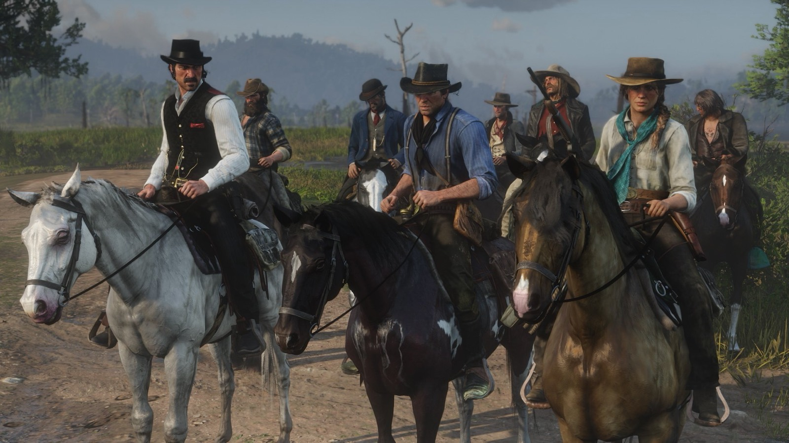
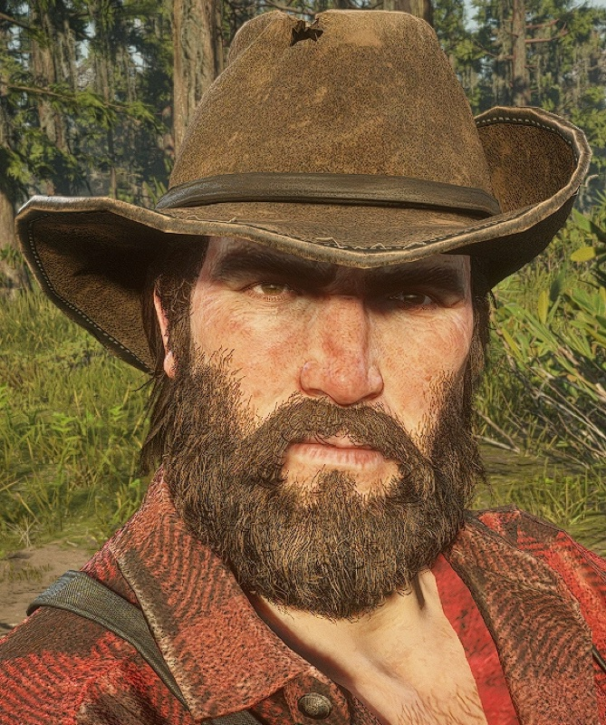
Character · Van der Linde gang
Bill Williamson
Bill Williamson, born Marion Williamson, is a former Army soldier and a gunman of the Van der Linde gang in Red Dead Redemption 2 (2018), and one of the antagonists of Red Dead Redemption (2010). In 1899 he follows Dutch van der Linde until the gang breaks apart. By 1911 he leads his own gang from Fort Mercer, in New Austin, and is the first man John Marston is forced to hunt. He flees to Mexico and is killed on the road outside Escalera in "An Appointed Time".
He is played by Steve J. Palmer, who provided his voice and motion capture in both games.
- Full name
- Marion Williamson (goes by Bill)
- Other names
- William Williamson (Blackwater Ledger, 1911); Albert Danielson (alias at the Saint Denis party in "The Gilded Cage")
- Born
- Not given in the games (Red Dead Wiki estimate: 1869 to 1872)
- Died
- 1911, near Escalera, Nuevo Paraíso ("An Appointed Time")
- Status
- Deceased
- Nationality
- American
- Affiliation
- U.S. Army (until 1892), Van der Linde gang (early 1890s to 1899), Williamson gang (leader, 1911)
- Role
- Gunman of the Van der Linde gang; later leader of his own gang
- Family
- Unnamed father (alcoholic)
- Games
- Red Dead Redemption (also a multiplayer character with Liars and Cheats), Red Dead Redemption 2
- Voiced by
- Steve J. Palmer
Biography
Origins
The games give no birth date. The Red Dead Wiki places his birth between 1869 and 1872, working back from his biography in Red Dead Redemption 2, which says he was in his early twenties when the army discharged him in December 1892. According to the wiki, which cites camp dialogue, his father drank himself into madness on whiskey cut with moonshine, and Bill feared the same end. The same source says that Marion, his real first name, was a family name he disliked, which is why he goes by Bill. His record started early. A Blackwater Ledger article of 1911, "Williamson Gang Reign Of Terror" (No. 53), describes him as "a career criminal and reprobate, with a record running back to reform school" and reports the belief that he once rode with the Van der Linde gang.
Bill then joined the United States Army. According to the Red Dead Wiki, he was assigned to the 15th Infantry, and he claims in camp to have served in the cavalry as well. During his service he fought Native Americans. On 27 December 1892, he was dishonorably discharged for deviancy and attempted murder. The wiki says he spent about a year after that sleeping rough, drinking hard and holding up travelers on the highways. In 1893, still according to the wiki, he tried to rob Dutch van der Linde and Hosea Matthews. The two men laughed at him: they had already taken his ammunition. Dutch calmed him down and offered him a place in his gang, and Bill stayed loyal to him from then on.
Bill stays with the gang for six years (the Official Guidebook says five) and takes part in its robberies and raids as one of its guns, alongside Dutch, Hosea, Arthur Morgan and John Marston. In "High and Low Finance", Uncle brings up a bank job "up near Canada" that he pulled with Arthur and Bill a couple of years earlier, and Arthur reminds him that he was the lookout, and not a good one. In "The New South", Hosea recalls that Arthur and Bill were off doing something else on the day Dutch found Josiah Trelawny in an outhouse, in a small town whose name Dutch no longer remembers. In 1899, the gang is camped near Blackwater, in West Elizabeth, when a robbery of a ferry goes wrong. The survivors flee north into the snowbound mountains of Ambarino.
Red Dead Redemption 2 (1899)
Chapter 1: Colter
In "Outlaws from the West", the gang reaches the abandoned mining town of Colter in a blizzard. Bill and Arthur carry the body of Davey Callander, who has died of his wounds, into a cabin on a stretcher. When Susan Grimshaw hands out the cabins, Micah Bell complains that he gets a bunk bed next to Bill's. When Arthur and Javier Escuella later bring John back wounded in "Enter, Pursued by a Memory", Bill and Lenny Summers pull him off Javier's horse roughly, carry him into a cabin and lay him on a bed.
"Old Friends" opens in the men's cabin. Micah mocks Bill and Lenny for their long faces. Bill answers that people miss the ones who fell. Lenny tells Micah there will be a party when he falls, Bill laughs and agrees, and Micah punches him in the face. Arthur, Javier and Lenny hold the two men apart before Dutch bursts in and stops the fight. Bill rides with Dutch, Arthur, Micah, Javier and Lenny to attack the camp of Colm O'Driscoll's gang in Ewing Basin. On the way, he backs Dutch's wish to end the feud with Colm: "Damn right, boss." At the camp, Dutch assigns positions to Micah, Bill, Javier and Lenny.
Once the O'Driscolls are dead, Dutch tells Bill to search a wagon while the others search the buildings. Arthur finds a crate of dynamite and hands Bill a stick; Bill sniffs it, pronounces it fit for use and carries the box out. Arthur also brings back a prisoner, Kieran Duffy. At Colter, Dutch orders Bill and Uncle to tie Kieran up somewhere safe and to starve him first. The two men lead him away while Kieran protests that he is not an O'Driscoll and hates Colm.
In "Who the Hell is Leviticus Cornwall?", the gang targets a train owned by the industrialist Leviticus Cornwall. Dutch sends Bill ahead with the dynamite: "Bill, now you ride ahead and set the charge...at the water tower, just before the tunnel." Dutch sends Arthur down to check on him. Bill says he is fine, then lets Arthur unspool the wire and set up the detonator by the rocks before sending him back up. When the train passes over the charge, Bill pushes the plunger and nothing happens: "Shit, no! What? God." Arthur, Javier and Lenny run to the tunnel and jump onto the train from above; Javier misses, and only Arthur and Lenny get aboard. On the train, Lenny asks what Bill was doing, since he had plenty of time to set the charge; Arthur answers that he hooked up the wire himself, "but we won't mention that."
The rest of the gang, Bill included, catches up once the train has stopped. Dutch has Bill hand dynamite to Arthur and Charles Smith so they can blow open Cornwall's private car, and Bill tells the others to stand well back. In "Eastward Bound", the gang leaves the mountains for the Heartlands. Bill loads the wagons with Lenny and Reverend Swanson, then rides in the wagon ahead with Charles. When the wheel of Arthur and Hosea's wagon comes off after a stream crossing, Bill asks if they are all right, and Charles stays back to help. According to the mission page, Bill is then absent from the new camp at Horseshoe Overlook until after "Americans at Rest": Hosea tells Arthur that Bill, Charles and Javier are already in Valentine.
Chapter 2: Horseshoe Overlook
In "Americans at Rest", Arthur joins Javier and Charles at Smithfield's Saloon in Valentine. Bill stumbles in drunk, bumps into a customer, takes offense when told to take it easy and headbutts the man onto a table. A general brawl follows. Bill suggests shooting their opponents ("Let's just shoot these bastards!"), and Charles says they can handle them. Bill is soon fighting three men at once and calls Arthur into the fight. When a large local named Tommy comes down the stairs and attacks Javier, Bill sends Arthur to help him. Outside, Bill cheers Arthur on during his fight with Tommy, then reminds the others that he had promised them a good time.
Dutch then arrives with Josiah Trelawny, who greets Bill as "looking well as can be" and brings news that Sean MacGuire is alive and held by bounty hunters. Dutch sends Charles to find out more and Trelawny to go with Javier. Bill asks what he should do. Dutch turns the question back on him and, when Bill asks what he means, waves him off. Later in the chapter, in "Who is Not Without Sin", Arthur carries a drunk Reverend Swanson back to his tent. If Arthur greets him on the way, Bill remarks: "Don't remember you ever carrying me home, Morgan."
In "Paying a Social Call", Arthur questions Kieran, who has been tied to a tree at camp. Dutch and Bill join him. Dutch orders Bill to geld the prisoner on the spot, and Bill heats a pair of tongs in the fire. Before he can use them, Kieran gives up Six Point Cabin as Colm's hideout and offers to lead them there. Arthur takes Bill and John along, with Kieran as guide. On the ride, Bill tells Arthur that he has slipped throwing knives into his saddle, and, according to the Red Dead Wiki, he warns Kieran that a betrayal would cost him his manhood before his life. If the player chooses to talk to Bill, he talks about the saloon brawl in Valentine.
At Six Point Cabin, Arthur and Bill each silently take out one of two guards; the player can also send Bill alone to kill a third man. A gunfight then breaks out, and the trio defeats the O'Driscolls, Bill using his Schofield revolver. When Arthur enters the cabin, a last O'Driscoll knocks him down, and Kieran shoots the man dead. Colm is not there. Arthur accuses Kieran of setting them up and points his gun at him. Kieran points out that he has just saved Arthur's life, and Bill steps in to agree with him. When Arthur tells Kieran he is free to go, Kieran answers that he would not last long alone with Colm's men after him. Bill and John back him, and Arthur sends the two of them back to camp with Kieran.
During this chapter, the Red Dead Wiki notes that Bill can also be captured by bounty hunters. Javier then asks Arthur to help him, and the two attack the hunters' camp, kill them and cut Bill free. Asked about it back at camp, Bill insists that he had a plan to get out on his own.
Chapter 3: Clemens Point
After the move to Clemens Point, in Lemoyne, Bill takes part in Dutch's attempt to play the Gray and Braithwaite families against each other. In "American Distillation", Arthur meets Dutch and Bill at the sheriff's office in Rhodes: Sheriff Leigh Gray has made the three of them temporary deputies to help his deputy, Archibald MacGregor, shut down a moonshine still in the swamp. At the still, Arthur and Bill knock out the moonshiners on one side while Dutch and Archibald take the other. Arthur blows up the still, and the two men fight off the Lemoyne Raiders who come to investigate. Archibald hands most of the moonshine to the gang, and Bill drives the wagon back to camp.
In "An Honest Mistake", Uncle has a tip about a wagon he believes unguarded. Arthur agrees to go on condition that Uncle comes too, and Charles and Bill join them. The driver turns out to work for Cornwall Kerosene & Tar, and Cornwall's guards descend on the gang. The four flee into the woods and hide in a barn. At night, guards come to search it, and Bill knocks over a bucket, which starts the fight. A smashed lantern sets the barn on fire, and the four escape into the trees. They split into pairs, Charles with Bill, finish off their pursuers and divide the take.
"Sodom? Back to Gomorrah" is Bill's own plan. He calls Arthur over at camp and explains that he and Karen Jones have been preparing to rob the Valentine bank since Horseshoe Overlook. He complains that his own mistakes get him called a fool and an idiot, while Arthur's are shrugged off as bad luck. Lenny and Karen agree with him. The plan is for Karen to go in first as a distraction, with Arthur along as "a... insurance policy" to handle the vault. On the ride, Bill reveals that he has been drinking with the Gray boys, who seem to be looking for extra security, and that a deal could come of it. In optional dialogue on the ride, he complains that nobody lets him forget the dynamite that failed to go off.
In Valentine, Karen plays either a drunk or a lost woman to distract the staff. Arthur, Bill and Lenny burst in and hold up the bank, Bill ordering the customers not to move. The teller cannot open the safes, so Arthur either cracks them or blows them with dynamite while Bill keeps the hostages quiet and urges him to hurry. If Arthur uses dynamite, the four have to shoot their way back to the horses; either way, a passing train lets them shake off the lawmen, and they split the money.
Bill also organizes a coach robbery of his own, a companion activity. He wants to stop a Boles Overland banking coach west of Dewberry Creek and says they need a woman as a distraction, so Arthur brings Tilly Jackson. Bill and Tilly argue all the way. One of his remarks offends her; Bill then opens fire on the guards, and the shooting sends Tilly riding off. Arthur jumps onto the coach to stop it near an oil derrick in the Heartlands and blows open the locked doors, for a total take of 307.50 dollars. According to the Red Dead Wiki, Bill mentions on this outing that he has recently robbed a homestead in Roanoke Ridge and some drunken soldiers near the swamps.
Bill's contact with the Grays leads to "A Short Walk in a Pretty Town". Arthur, Micah, Bill and Sean meet in Rhodes for the promised security job, which turns out to be an ambush. Sean is killed by a sniper. Bill is shot in the shoulder and captured by Sheriff Gray during the gunfight. Arthur and Micah take cover in the gunsmith's, clear the street and demand Bill's release at the sheriff's office. Gray comes out holding a gun to Bill's head, with Archibald and two other lawmen; Arthur shoots the sheriff dead, and the deputies are killed. Arthur blames Bill and Micah for their carelessness and tells Bill to give Sean a proper burial.
Back at camp, the gang learns that Jack Marston has been taken. In "Blood Feuds, Ancient and Modern", Bill rides to Braithwaite Manor with Dutch, Arthur, Hosea, John, Charles, Javier and Lenny, while Micah and Kieran guard the camp. The gang kills the Braithwaite men, burns the house and learns from Catherine Braithwaite that her sons handed Jack to Angelo Bronte. In "The Battle of Shady Belle", the Pinkerton agents Andrew Milton and Edgar Ross come to Clemens Point and offer the gang amnesty in exchange for Dutch. The gang refuses and moves to Shady Belle, an old plantation house in the bayou.
Chapter 4: Saint Denis
In "The Gilded Cage", Bill goes with Dutch, Arthur and Hosea to Mayor Henri Lemieux's garden party in Saint Denis, all four in tuxedos, in a coach driven by Lenny. Bronte, the guest of honor, has invited them. While Dutch and Arthur talk with Bronte on a balcony, Hosea and Bill mingle with the guests. According to the Red Dead Wiki, Bill gives a false name that evening, tells one guest that he comes from the northwest and tells another that he served in the army. He finds no lead. On the way home, he calls the evening "torture".
In a companion activity, Micah and Bill plan to ambush a Boles Overland banking coach in the swamps of Bayou Nwa and invite Arthur along. Micah lays dynamite on the road, Arthur shoots it as the coach passes, and the three kill the remaining guards before Arthur loots 305 dollars. After Bronte sets the gang up at a trolley station, Bill joins Dutch, Arthur, John and Lenny in "Revenge is a Dish Best Eaten". They land by boat behind Bronte's mansion, fight through his men and the police, and carry Bronte off. The Red Dead Wiki says that on the boat ride, Dutch rebukes Bill for linking Native Americans with savagery. On the way back, Dutch drowns Bronte and feeds his body to an alligator.
Bill is part of the crew for "Banking, The Old American Art", the robbery of the Lemoyne National Bank in Saint Denis. The Red Dead Wiki's page on Bill says that he questions the bank manager for the safe combinations. The Pinkertons surround the bank. Hosea is killed in the street, John is arrested and Lenny dies on the rooftops during the escape. Bill hides until nightfall in an abandoned apartment with Dutch, Arthur, Micah, Javier and Charles. At the docks, Charles draws the guards away so the other five can board a ship, the Antenor. According to the mission page, Bill asks Dutch on board whether the Pinkertons will follow them to Cuba.
Chapter 5: Guarma
In "Lost and Not Quite Found", a storm wrecks the Antenor at night. Dutch wakes Arthur, and Bill follows Dutch through the ship with Micah and Javier. Falling crates cut Arthur off from the group, and by the time he reaches the deck, Dutch, Micah, Bill and Javier are already in a lifeboat. In "Welcome to the New World", Arthur wakes alone on a beach and follows a trail of smoke to the four men's campfire. Dutch explains that they are on Guarma, a sugar island. Soldiers led by Levi Simon, who runs the plantation for Colonel Alberto Fussar, then capture all five and chain them with captured local rebels.
Rebels led by Hercule Fontaine ambush the convoy. Arthur grabs a gun and kills the guards, and the prisoners free themselves. Javier is shot in the leg and recaptured, while Bill escapes with Dutch, Arthur and Micah. They fight off the soldiers from an old building, then follow Hercule and his fellow rebel leader Leon Fuentes through the jungle to La Capilla, the rebels' camp. Hercule promises to help them leave the island in exchange for their help against Fussar.
Javier is later rescued from the sugar factory. In "Hell Hath No Fury", a warship sent from Cuba attacks the rebel fortress of Cinco Torres. Once the fort is breached, Micah and Bill stay on the roof to guard the cannon while Arthur, Dutch and Hercule go down to hold the walls. Arthur and Hercule then sink the warship with the cannon. After the battle, Dutch and Bill go to fetch Javier. In "Paradise Mercifully Departed", Bill stays behind to guard the recovering Javier while Arthur, Micah and Dutch help Hercule destroy the coastal gun batteries and attack Aguasdulces, where Fussar is killed. The five gang members then sail back to America.
Back in Lemoyne, the gang has moved to Lakay, an abandoned village in the bayou, under Sadie Adler's lead. In "Fleeting Joy", Arthur arrives first, followed by Micah, Javier and Dutch. Bill comes in last, visibly annoyed, saying he has asked everywhere for the gang. The Pinkertons attack almost at once. Sadie leads Arthur through a trapdoor to flank them, Bill joins the two, and Arthur turns the machine gun on the attackers until they retreat. In "That's Murfree Country", the gang moves north to Beaver Hollow, a cave in Roanoke Ridge. When Susan Grimshaw shoots Molly O'Shea there, she orders Bill and Pearson to burn the body.
Chapter 6: Beaver Hollow
At Beaver Hollow, Micah becomes Dutch's closest adviser, and Bill stays loyal to Dutch. According to the Red Dead Wiki, he comes to doubt John's loyalty and resents the gang members who lose faith in Dutch. In "The Delights of Van Horn", Micah meets Arthur and Bill at an old house in Roanoke Ridge and tells them to steal a stagecoach of dynamite in Van Horn while he carries on with his planning. Arthur and Micah argue about Micah's new place at Dutch's side, and Micah mocks Arthur's illness. Bill steps in and tells Micah to stop. On the ride, Arthur tells Bill that Dutch has lost his mind. Bill takes it badly and accuses Arthur of going soft.
In Van Horn, Bill suggests that Arthur play a drunk in the road while he covers from above. Arthur swaps the roles, saying he shoots better and Bill acts better. He takes Bill's Carcano rifle to the upper floor of an abandoned building. When the coach arrives, Bill, feigning drunkenness, falls in the road in front of it. A rider dismounts to move him, and Bill shoots him; the wiki names the man Eric. Arthur picks off the rest of the escort. Bill drives the wagon south while Arthur holds off the riders chasing them, and the two men congratulate each other afterwards. They deliver the dynamite to Micah and John near Beaver Hollow, and Micah sends Bill on ahead.
In "My Last Boy", Eagle Flies leads Wapiti warriors against the Army at the Cornwall oil refinery, and his father Rains Fall begs Arthur for help. Arthur goes, followed by Charles, then Dutch, then the rest of the gang except Micah, Cleet and Joe. Bill rides with them. He rides with Dutch's group, which hits the Army from another side while Dutch and Arthur go into the warehouse. Arthur's journal records the take from this job under the initials "A, D, C, B & S", which the Red Dead Wiki reads as Arthur, Dutch, Charles, Bill and Sadie.
In "Our Best Selves", the gang tries to rob a train guarded by US Army soldiers outside Saint Denis. The train does not stop, and the gang chases it. When a carriage catches fire, Arthur jumps onto the back of Dutch's horse and John onto Bill's to get past the flames and back aboard. John is shot and falls from the train. Dutch says he will go back for him and leaves with Javier, Micah and Joe, while Arthur, Bill, Sadie and Cleet fight off the soldiers following the train. The Red Dead Wiki says it is Bill who warns Arthur that there is barely any track left, so Arthur jumps off with what money he can carry before the train plunges from the destroyed Bacchus Bridge.
In "Red Dead Redemption", Arthur returns to Beaver Hollow and accuses Micah of informing for Milton. John then walks into camp alive. Bill says only "John...", and John accuses Dutch of leaving him to die. Dutch demands to know who is with him and who is betraying him. Arthur calls on Bill and Javier to "think for yourselves". Bill stays with Dutch, Micah, Javier, Cleet and Joe, guns on Arthur and John, until the Pinkertons attack the camp. The gang scatters. Dutch, Micah, Cleet and Joe chase Arthur and John after the two escape through the caves; Bill and Javier are not among the pursuers. It is the last time Bill appears in Red Dead Redemption 2.
Red Dead Redemption 2: the epilogue (1907)
Bill does not appear in the 1907 epilogue. The games do not show where he went after the gang broke up at Beaver Hollow. The newspaper article "Notorious Bad Man Alive", set in 1907, reports a sighting of Dutch after seven years on the run. It says that Hosea and Arthur were killed in Pinkerton raids in 1899, and it names Bill Williamson, Micah Bell, John Marston and Charles Smith as gang members believed to be still at large.
Red Dead Redemption (1911)
By 1911, Bill leads a gang of his own in New Austin, with Fort Mercer, an abandoned army fort near the Mexican border, as its stronghold. The Red Dead Wiki's page on the fort notes that the Del Lobo gang occupied it in 1907, and the wiki describes his band as the dominant outlaw gang in the state. Edgar Ross and Archer Fordham, agents of the Bureau of Investigation, hold John's wife and son to force him to track down his former companions, starting with Bill. As John steps off the steamboat in Blackwater, a newsboy is shouting the headline: "Bill Williamson's gang terrorizes New Austin!"
Act I: New Austin
In "Exodus in America", a guide named Jake leads John from Armadillo to Fort Mercer and leaves him at the gate. John calls Bill out. From behind the walls, Bill tells him to leave before he has to kill him. He then appears on the ramparts with his men and accuses John of always taking him for an idiot. John says that Bill was like a brother to him and that he has come to try to save him. Bill answers: "Do I look like I need saving?" When John offers his help, Bill retorts that John never tried to save anyone but himself.
When John says he implores him to think it over, Bill mocks the word and his taste for fancy language, declares that he is the one in charge now, with Dutch and John out of the picture, and sends him back to ask for someone more impressive. John reaches for his revolver, and one of Bill's men shoots him. Bill offers a mocking word of pity and leaves him for dead outside the gate. Bonnie MacFarlane and her ranch hand Amos find John and take him to Doctor Nathanial Johnston in Armadillo.
While John recovers and works at MacFarlane's Ranch, Bill's gang keeps raiding the region. In "Political Realities in Armadillo", deputy Jonah at first takes John for one of Bill's men. In "Spare the Rod, Spoil the Bandit", Marshal Leigh Johnson leads a posse of John, his deputies Eli and Jonah, and Dell Hopkins to Ridgewood Farm, where they find slaughtered animals, bodies and surviving hostages. The posse kills the bandits at the farm. Johnson thinks the massacre looks like the work of Williamson's men, and the posse follows the survivors' directions after the rest of the gang.
On the way, John explains to Jonah that Bill is "the currency in a complicated transaction", that they once rode in the same gang and that Bill has left him for dead the last two times they met. Bill appears on the cliffs near Mercer Station. He warns John: "I didn't kill you before, but I sure as shit will now!" John answers that he does not want to kill Bill but will. Bill retorts that Dutch always found John arrogant, orders his men to attack and leaves. The posse holds the ruins of the station against two waves of riders and captures Bill's right-hand man, Norman Deek. Once this mission is done, "The Burning" can follow: Bill's gang sets fire to the MacFarlanes' barn, and John gets the trapped horses out.
In "Hanging Bonnie MacFarlane", Bill's gang kidnaps Bonnie and demands Deek's release in exchange. At the handover near Tumbleweed, the gang opens fire, Deek is killed, and John saves Bonnie from the noose. John then gathers a posse for Fort Mercer: Johnson, Eli, Jonah, the con man Nigel West Dickens, the treasure hunter Seth Briars and the gun runner Irish, who supplies a Gatling gun. In "The Assault on Fort Mercer", Seth, already inside, welcomes West Dickens's wagon through the gate, and John opens fire from the back with the Gatling gun.
The posse kills the gang members inside and holds the gate against reinforcements, but Johnson reports: "We still can't find Williamson anywhere." Jonah brings in a captured bandit and reports that Bill has "already run off to Mexico yesterday morning". John concludes: "He's gone to see Javier Escuella." Pressed by Eli, the bandit says Bill is somewhere near Chuparosa. Irish offers to take John across the border.
Act II: Nuevo Paraíso
In Nuevo Paraíso, John works for the army of Colonel Agustin Allende in the hope of being handed Bill and Javier. In "Cowards Die Many Times", Allende tells him that the two men have been captured in Chuparosa and sends him there with Captain Vincente de Santa, who betrays him; the army tries to kill him there. John then sides with the rebels of Abraham Reyes. Before the attack on El Presidio, in "The Gates of El Presidio", Reyes tells John that Javier is there but that he does not know about Williamson. He adds that the two outlaws "paid Allende to hide them" and have been under his protection since John arrived in Mexico.
John tells Reyes that he will not leave Mexico until he has Bill Williamson. Inside El Presidio, Javier offers to give him Bill and Dutch in exchange for his freedom, then escapes through a window. If John captures him, Javier says that Bill is not there: "He's with Allende." When John reproaches him for leaving him for dead, Javier answers: "It was Bill, not me." Ross and Fordham collect Javier at the border, and Fordham reminds John of his obligations: "We need you to find Williamson".
In "An Appointed Time", the rebels free Reyes in Escalera and storm Allende's palace. As they break down the door, Allende calls out that they can still reach his stagecoach, and Bill tells him to go while he covers him. The two escape in an armoured coach escorted by riders and a Gatling gunner. John and Reyes give chase. John shouts at Bill to stop running and fight. Bill answers with insults aimed at Abigail and Jack, and calls John a coward who does the government's bidding.
Once the escort is dead, the coach stops. Allende turns on Bill: "Buying my freedom", he says, and pushes him out of the coach. He pins him to the ground and offers him to John: "Take Williamson. Just let me live." Bill tells John that he was always weak-minded and that Dutch, like the rest of them, wanted him dead. He then stammers that he will come quietly and reaches for Allende's gun. The player decides whom John shoots, if anyone; Reyes shoots whoever John spares. Bill dies on the road outside Escalera in 1911. John tells Reyes that, "with Williamson dead", his jailers need him back in Blackwater.
Act III: West Elizabeth
Bill's death does not free John. In "Bear One Another's Burdens", John protests to Ross and Fordham in Blackwater: "I got you Williamson and Escuella. It's over!" The agents answer that they still need Dutch. Later in the mission, John asks Ross where it will end: "First it was Bill, now it's Dutch." In "And The Truth Will Set You Free", Fordham reproaches John for the time he has taken, recalling that he was sent to Fort Mercer "with the simple task of killing Bill Williamson" and ended up "running all over Mexico".
Personality
Rockstar's character description reads: "An ex-soldier discharged from the army, possibly dishonorably. Hot-headed, he tends to act first and think later but is tough, dedicated and always ready to fight." Red Dead Redemption 2: The Official Guidebook, as quoted by the Red Dead Wiki, calls him easily angered and "not the brightest of the band", and says he will do anything for Dutch. The Game of the Year Edition guide of Red Dead Redemption presents the Bill of 1911 as a man who briefly knew a better life with Dutch, then went back to violence, drinking, intimidation and murder once Dutch lost his mind. The same guide credits him with "the rage of a man disappointed".
Bill backs Dutch without reservation. At a campfire in chapter 3, after Micah has mocked his army record, he tells the others that Dutch saved his life because he saw something in him. He admits he is not clever, and says that Dutch gives him a purpose. He is also a regular target of the camp's jokes. In a camp conversation with Sean and Lenny, quoted on the wiki's page on his later gang, he says that one day folk will take orders from him and "it won't be no laughing matter".
He drinks heavily, and several of his fights at camp, with Javier, Hosea and Pearson among others, break out while he is drinking. The Red Dead Wiki also notes that he goes for the camp's donation box several times and stops himself before taking anything. He has quieter moments. At a campfire he recalls that his army unit rarely lit a fire at night for fear of being attacked, and says that the nights without fire left him afraid of the wolves prowling around the camp.
In his own words
At Colter, in "Old Friends", he sums up the gang's mood after Blackwater: "I guess...I guess folks miss them... that fell." In the Valentine saloon brawl of "Americans at Rest" he shouts "Ain't there no men in this saloon?" In "Sodom? Back to Gomorrah" he puts his grievance to Arthur in front of Lenny and Karen: "How come every time I get in trouble... I'm called a fool and an idiot... but when you get in trouble... oh, it's just one of them things?" Talking about his dealings with the Grays, he tells Arthur: "See, you don't realize, Morgan. I'm out there putting in the work same as you."
Names and nicknames
His birth name is Marion. In a camp scene that can play from chapter 2, Micah calls him "William", and Bill corrects him: "Bill" comes from Williamson. Micah then gets him to reveal his first name, mocks it, hears that it is a family name, and promises to keep the secret. Dutch addresses him as "Mr. Williamson" when giving orders at Colter. According to the Red Dead Wiki, he goes by Albert Danielson at the mayor's party in Saint Denis, and a Blackwater Ledger article in Red Dead Redemption (issue No. 58) names him William Williamson.
Appearance
In 1899 Bill is big and heavyset, with a thick beard and brown hair thinning at the front. His everyday clothes are boots, gray trousers and a shirt, either plain white or checked; some outfits add a long brown leather coat. One side of his hat is pinned up, and the wiki identifies the pin as a U.S. Cavalry insignia. At the Saint Denis bank he is in a gray checked suit, and on Guarma, without the jacket, he is down to the white shirt and braces. By 1911 he has lost weight and most of his hair, and his beard is patchy and going gray. His clothes are also tidier: a white shirt, a faded blue vest and a short gray frock coat, a brown neckerchief, and patched trousers tucked into riding boots. According to the wiki, the pin on his 1911 hat shows the square and compasses of the Freemasons.
Relationships

Dutch van der Linde
According to the Red Dead Wiki, Bill joined the gang in 1893, after a failed attempt to rob Dutch and Hosea. After the Valentine brawl, Dutch gives everyone else a task in the search for Sean and makes fun of Bill when he asks for one. Dutch takes him to Rhodes, where Sheriff Gray makes him, Dutch and Arthur temporary deputies in "American Distillation", and to the mayor's party in Saint Denis. According to the wiki, on the boat to Bronte's mansion Dutch rebukes him for associating Native Americans with savagery.
Bill is shipwrecked on Guarma with Dutch. According to the Red Dead Wiki, in chapter 6 he turns on gang members who lose faith in Dutch. In the Beaver Hollow standoff he sides with Dutch and Micah against Arthur and John, ignoring Arthur's plea: "Bill, Javier... think, think for yourselves." When the Pinkertons attack, he is not among those who chase Arthur and John. At Fort Mercer in 1911 he tells John that the days of Dutch, and of John, are over. John later tells Abigail that Bill "took it hard" when Dutch went crazy. At Escalera Bill shouts at John that Dutch wanted him dead.

John Marston
In 1899 Bill and Lenny carry the wounded John into a cabin at Colter, and Bill rides to Six Point Cabin with John and Arthur. At a campfire Bill teases John about his scars and admits he wishes he had one; in another talk he wonders aloud how and when they will die, and John says he tries not to think about it. At Sean's return party they get drunk together at the poker table until Abigail calls John pathetic. In "Our Best Selves" Bill carries John on horseback to a car further up the train. In the final standoff he stands with Dutch.
In 1911 Bill is the first man John is forced to hunt. At Fort Mercer John calls him a brother and offers to help; Bill turns him down, ridicules his choice of words, and one of his men shoots John, who is left for dead. During the pursuit after the Ridgewood Farm raid, Bill shouts from the cliffs that this time he will finish John off. John tells his posse that Bill has left him for dead the last two times they met. Bill dies near Escalera in "An Appointed Time". Back home, John describes him to Abigail as "Angry and dumb".

Arthur Morgan
Arthur and Bill work together throughout 1899. Bill brawls beside him in Valentine and brings him into the Valentine bank job with Karen and Lenny. The Rhodes ambush follows a meeting with the Grays that Bill had set up, and Arthur holds Bill and Micah responsible. At Shady Belle Bill tells Arthur he regrets what happened to Sean and had not expected the Grays to turn on them.
In "The Delights of Van Horn" Bill tells Micah to stop mocking Arthur's illness, then, on the road to Van Horn, tells Arthur he has gone soft. The wiki also records a camp exchange in which Bill calls Arthur a turncoat; Arthur answers that he is still loyal and that Bill cannot see what is really going on. At Beaver Hollow Bill aims his gun at Arthur.

Javier Escuella
Javier and Charles are drinking in the Valentine saloon when Bill stumbles in drunk and starts the brawl of "Americans at Rest". At camp a drunk Bill calls Javier a "greaser"; Javier pins him down with a knife at his throat, asks Arthur whether he should kill him, then lets him go. On Guarma Bill guards the wounded Javier while the others go after the gun batteries. At Beaver Hollow the two discuss whether John is a traitor and whether he deserves to hang. Both stand with Dutch in the standoff.
In 1911 Bill leaves Fort Mercer for Mexico the day before John's assault. According to the wiki, Javier helped him cross, and both were placed under Colonel Allende's protection. When John corners Javier at El Presidio, Javier offers: "I can give you Bill." Once caught, he pleads: "It was Bill, not me." John answers that Bill is next. John later tells Abigail that Bill, Javier and Dutch are all dead.

Micah Bell
In "Old Friends" Bill laughs at Lenny's quip about Micah, and Micah punches him in the face; Arthur, Javier and Lenny separate them before Dutch bursts in. During the raid that follows, Dutch sends the two down into the O'Driscoll camp from another side. At camp Micah belittles Bill's intelligence and army record, mocks his first name, and scares off the dog Cain while Bill is petting it. Micah and Bill plan a banking coach robbery in the Bayou Nwa and bring Arthur along. Both ride with Arthur and Sean to the Rhodes meeting, where Micah and Arthur free Bill from the sheriff. At Beaver Hollow Bill stands with Dutch and Micah.

Kieran Duffy
At Colter Dutch has Bill and Uncle tie up the captured Kieran. In "Paying a Social Call" Dutch orders Bill to geld him; Bill picks up a pair of red-hot tongs, and Kieran gives up Six Point Cabin. According to the wiki, Bill warns him on the ride that betraying them would cost him his life, and his manhood before that. After Kieran saves Arthur's life at the cabin, Bill and John persuade Arthur to keep him. Back at camp Bill threatens him with the tongs again. Another time he pushes Kieran to drink from his bottle; Kieran takes a drink, then excuses himself to see to the horses, to Bill's disappointment. When John says Bill dislikes anyone tougher and smarter than he is, Charles adds "except for maybe that Kieran". According to the wiki, Bill says after Kieran's death that he was starting to like him.

Hosea Matthews
According to the wiki, Hosea was one of the two men Bill tried to rob in 1893. At camp Hosea tells him to do some work; when Bill asks why Hosea does not work himself, Hosea replies that he has, and that this is why he is in his present state. One night a drunk Bill badmouths him at the dominoes table; Hosea pulls a revolver and sends him to sleep it off: "I've excused you quite enough!" Asked by Bill what he is reading, Hosea says it is nothing that would interest him. At a campfire Hosea tells Bill and others how he once got out of a burglary gone wrong by passing himself off as the dead man's best friend at a wake. Bill goes with him to the mayor's party, which he later calls "torture", and escapes the Saint Denis bank job in which Hosea dies.

Charles Smith
In "Eastward Bound" Bill and Charles drive the wagon ahead of Arthur and Hosea's. In "An Honest Mistake" they escape Cornwall's men together after the barn fight. According to the Red Dead Wiki, Bill says in a camp scene that Charles has been a bad apple ever since he joined the gang. When Sean asks Charles for a joke, Charles answers "Bill Williamson".

Lenny Summers
At Colter Bill laughs at Lenny's quip about Micah. The two load the wagons together for the move east. At Horseshoe Overlook Bill pushes Lenny to the ground behind John's tent; asked by Arthur, he complains that Lenny shows no respect, and Arthur turns the charge back on him. Bill also calls Lenny "boy" until Dutch tells him to stop, and Bill then apologizes to Dutch. After a successful coach robbery the two sit down for a friendly drink. Lenny and Sean gossip about Bill at the poker table. In chapter 3 they rob the Valentine bank with Arthur and Karen.

Sean MacGuire
Sean's return to Horseshoe Overlook is marked by a drink with Bill in Pearson's kitchen. Their talk turns to Mac Callander, who Sean thinks did not survive, and to the Callander brothers. At the campfire, when Sean says a man who stares into a fire long enough sees his past life, Bill answers "A burning stick". Bill sets up the meeting with the Grays in Rhodes, where a sniper kills Sean with a shot to the head. Arthur orders Bill to give him a proper burial.

Karen Jones
At Clemens Point Bill asks Karen about her plan to rob the Valentine bank. Karen is open to bringing him in, as long as the job stays hers and he does not push her aside. Bill and Karen then recruit Arthur and Lenny for "Sodom? Back to Gomorrah", in which Karen goes into the bank first to distract the staff. On the ride Karen tells Arthur that Bill is no better a drinker than he is: "And Bill ain't much better." According to the wiki, Bill asks Arthur at camp whether Karen is sweet on him, and Arthur doubts it.

Uncle
In "High and Low Finance", Uncle brings up a bank job "up near Canada with you and Bill a couple of years ago", and Arthur reminds him that he was the lookout, and not a good one. When the two eat together, Bill remarks that Uncle always gets to the food first, and Uncle answers that Bill is never far behind. They also mourn Mac Callander together. Trying to lift the camp's spirits, Uncle asks Bill what is troubling him, then moves on before Bill says anything. In "An Honest Mistake" Uncle's tip takes Arthur, Bill, Charles and himself into a fight with Cornwall's men; hiding in the barn, Bill knocks over a bucket and gives them away.

Susan Grimshaw
When Susan assigns the cabins at Colter, Micah complains that he gets a bunk bed next to Bill's. At a campfire in chapter 2 Susan says Dutch will pull them through and calls him an ideal American, and Bill agrees with her.

Simon Pearson
Back at Colter, Pearson grumbles that Lenny and Bill came back from hunting empty-handed, and Arthur sums Bill up: "Bill's a fool." At Horseshoe Overlook Bill delivers fish to the kitchen and loudly demands gratitude; Pearson tells him he has already been thanked and asks whether he is hard of hearing. Drinking with Pearson at Shady Belle, Bill tells him that drink is his whole problem. Pearson shoves him and says he is all talk; Bill answers with a punch that puts him on the ground. The scene can play again at Jack's return party.

Abigail Marston
At Colter Bill helps carry the wounded John to Abigail. After "Our Best Selves" he follows Dutch rather than go after her. In 1911 she says Bill never liked surprises and was only frightening "if you was afraid of dumb fools".

Jack Marston
When Jack disappears, Bill joins the assault on Braithwaite Manor to get him back. At the party for Jack's return to Shady Belle, Bill is among those who comment on it. In "Old Friends, New Problems" (1911), Abigail asks John what to say when Jack asks about "Uncle Bill" and "Uncle Dutch", who were his family when he was little. At Escalera Bill shouts at John that Jack is probably not his son.

Sadie Adler
Bill is on Guarma while Sadie holds the rest of the gang together and moves it to Lakay. When the Pinkertons attack Lakay in "Fleeting Joy", he helps Arthur and Sadie fight them off. In "Our Best Selves" he fights the soldiers on the train alongside Sadie, Arthur and Cleet.

Tilly Jackson
In chapter 3 Bill wants a woman along as a distraction for his robbery of a Boles Overland banking coach near Dewberry Creek, so Arthur brings Tilly. The two bicker throughout the ride. One of Bill's remarks offends her; Bill then opens fire on the guards, and the shooting makes Tilly ride off. In chapter 6, according to the wiki, Bill and Tilly both fear that Arthur will throw them out after Strauss; Arthur reassures Tilly but not Bill.

Leopold Strauss
Eating with Strauss, Bill asks him what people eat in Germany. Strauss corrects him: he is Austrian. Bill then asks what they eat in Australia, and Strauss remarks that it is a miracle Bill does not fall over more often. Bill also tells him he heard Strauss soiled himself during the Cornwall business in Valentine; Strauss corrects him again, saying he was shot in the leg.

Orville Swanson
Before the gang leaves Colter in "Eastward Bound", Bill and Swanson load the wagons together. Over a meal, Bill wonders why the reverend sticks with them, and Swanson says he has little say in the matter. In "Who Is Not Without Sin", if Arthur greets Bill while carrying the drunk reverend to bed, Bill remarks that Arthur never carried him home.

Molly O'Shea
At Beaver Hollow Molly claims she informed on the gang, and Susan shoots her dead. Susan then orders Bill and Pearson to burn her body.
Leigh Gray
The sheriff of Rhodes deputizes Bill, Dutch and Arthur in "American Distillation". In "A Short Walk in a Pretty Town", after the Gray ambush in which Bill is shot in the shoulder, Gray captures him. He comes out of the sheriff's office holding a gun to Bill's head, and Arthur shoots him dead.

Leviticus Cornwall
In "An Honest Mistake" the wagon Uncle wanted to rob turns out to belong to Cornwall Kerosene & Tar, and Cornwall's guards chase Bill, Arthur, Charles and Uncle into a barn. In chapter 6, in "My Last Boy", Bill rides with Dutch's group in the attack on the soldiers at the Cornwall oil fields.

Edgar Ross
In 1911 Ross and the Bureau of Investigation hold Abigail and Jack to force John to hunt down his former companions, with Bill as the first target. After Escalera, John tells Ross and Fordham: "I got you Williamson and Escuella. It's over!" Ross answers by sending him after Dutch.
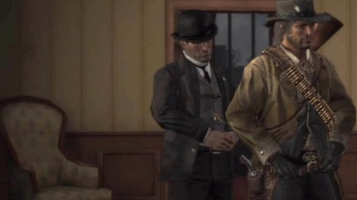
Archer Fordham
Fordham reminds John that the Bureau sent him to Fort Mercer "with the simple task of killing Bill Williamson", and blames him for the time he then spent running around Mexico.

Leigh Johnson
The marshal of Armadillo agrees to help John find Bill if John helps him clean up New Austin. After the Williamson gang raids Ridgewood Farm, Johnson, John and two deputies chase the raiders; Bill taunts John from the cliffs, and the posse captures his second-in-command, Norman Deek. Before the assault on Fort Mercer, Johnson calls Bill "a stone-cold killer". After the assault, his deputy Jonah brings in a captured outlaw and reports that Bill left for Mexico the previous morning.

Bonnie MacFarlane
Bonnie and her ranch hand Amos find John after Bill's man shoots him at Fort Mercer, and have him treated. Williamson's gang later burns the barn of MacFarlane's Ranch. According to the wiki, the gang then kidnaps Bonnie and threatens to hang her unless Norman Deek is handed over; John saves her at Tumbleweed. The wiki adds that she considers Bill the worst bandit in the county.
Norman Deek
Deek is Bill's second-in-command at Fort Mercer. He stands with Bill on the cliffs when Bill taunts John and Marshal Johnson's posse, and is captured in the shootout that follows. According to the wiki, the gang kidnaps Bonnie to exchange her for him, and his own men shoot him down during the ambush at Tumbleweed.

Nigel West Dickens
Dickens supplies the wagon for the Trojan-horse attack of "The Assault on Fort Mercer", with John hidden inside behind a Gatling gun. The attack wipes out the Williamson gang, but Bill has already gone to Mexico.

Agustin Allende
In Mexico Bill is under the protection of Colonel Allende. When Reyes's rebels break into the colonel's house at Escalera, Allende runs for his armored coach while Bill offers to cover him. Once John stops the coach, Allende shoves Bill out and offers him to John in exchange for his own life. Both men die on the road outside Escalera.
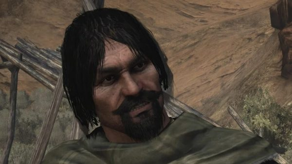
Abraham Reyes
Before El Presidio Reyes tells John he is sure Javier is there but knows nothing of Williamson. In "An Appointed Time" Reyes and John chase the coach carrying Allende and Bill out of Escalera. John can shoot Bill himself; if he does not act before Bill reaches for Allende's revolver, Reyes shoots him.

Vincente de Santa
Captain de Santa repeatedly promises John that the army will deliver Bill and Javier, and each time sends him on another errand instead.
Skills, weapons and horses
Explosives and jobs
The Red Dead Wiki presents Bill as the gang's rifleman and explosives man. In "Old Friends" he takes charge of the box of dynamite found in the O'Driscoll camp. In "Who the Hell is Leviticus Cornwall?" Dutch gives him the job of laying the charge for Cornwall's train; the charge fails to go off, and at the end of the mission Bill hands over the dynamite that opens Cornwall's car. Before Six Point Cabin, in "Paying a Social Call", he slips throwing knives into Arthur's saddle. The wiki counts him among the four non-player characters, with Charles, Sadie and Micah, who throw knives in scripted scenes.
He is also used for quiet work and as a decoy. In "American Distillation" he and Arthur knock out moonshiners without being seen. In "The Delights of Van Horn" he plays a drunk lying in the road to stop the army's dynamite wagon. In "Sodom? Back to Gomorrah" he offers to handle the vault, and Arthur keeps that job for himself. He also plans robberies of his own: a banking coach near Dewberry Creek with Arthur and Tilly, and, with Micah, a coach in the Bayou Nwa.
Camp life
Among his errands for Arthur, Bill asks for hair pomade; according to the wiki, he then leaves repeater ammunition for Arthur. When Arthur has been away from camp for a long time, Dutch may send Bill to find him, and riding back with Bill takes Arthur straight to camp. An Arthur who is hostile enough to the gang can be punched and thrown out of camp by Bill, as by Lenny, John, Charles, Sean or Javier.
Weapons
In 1899 his main weapon is a Bolt Action Rifle of his own, whose metal parts are browned rather than blued. He also carries a unique Schofield Revolver with a dark, rusted steel finish, which he rarely draws; "Paying a Social Call" is one of the few missions where he fires it. He has a unique knife, and the wiki's infobox also lists a Double-Barreled Shotgun. In "The Delights of Van Horn" Arthur borrows Bill's rifle for the ambush; the mission page names it as a Carcano Rifle. In 1911 he is seen with a Winchester Repeater and no visible sidearm.
Horse
In 1899 Bill rides Brown Jack, a large horse whose breed the wiki gives as Ardennes. In "The Aftermath of Genesis", when Charles worries about The Count, Arthur says the same goes for Bill and Brown Jack: "He's a drunk, miserable bastard, but... he loves that horse." The wiki's page on the horse adds that Bill asks Arthur to see that Brown Jack is given enough hay. Brown Jack carries him to the O'Driscoll camp, the Cornwall train, Six Point Cabin, the Valentine bank and Braithwaite Manor. After the Rhodes ambush, Bill takes Sean's body away for burial on Brown Jack. In chapter 6 he rides him to Van Horn, to the refinery and to the train of "Our Best Selves", and escapes Beaver Hollow on him in the final mission. Brown Jack does not appear after that.
Missions
The English Red Dead Wiki lists 25 story missions of Red Dead Redemption 2 for Bill, from the arrival at Colter to the standoff at Beaver Hollow, plus two companion activities: the coach robberies he runs with Arthur and Tilly, then with Micah and Arthur. The French edition also counts 25 story missions, but its list differs: it adds "Dear Uncle Tacitus", the crossing back from Guarma, and leaves out "Lost and Not Quite Found". Bill appears in no mission of the epilogue. In Red Dead Redemption, the wiki lists three missions. Bill is also the target of "The Assault on Fort Mercer" in Act I, but he has already left for Mexico when John's posse storms the fort. Bill is never playable in either story mode.
Red Dead Redemption 2
| Mission | Chapter | Bill's role |
|---|---|---|
| Outlaws from the West | 1. Colter | Arrives at Colter with the gang's caravan in the blizzard. With Arthur, he brings Davey Callander, already dead, into the cabin on a stretcher. |
| Old Friends | 1. Colter | Listed as mission giver by the wiki. Micah punches him in the men's shack after he laughs at Lenny's joke. During the raid on the O'Driscoll camp, Dutch sends him and Micah down into the camp from another side; he then searches a wagon and takes the dynamite Arthur finds. Back at Colter, Dutch has him tie up Kieran with Uncle. |
| Who the Hell is Leviticus Cornwall? | 1. Colter | Sent ahead by Dutch to lay the charge on the tracks by the water tower, before the tunnel. Arthur helps him wire the detonator, but the dynamite does not go off; Arthur, Javier and Lenny run to the tunnel and jump onto the train from above. Bill later hands Arthur and Charles the dynamite for the door of Cornwall's private car. |
| Eastward Bound | 1. Colter | Loads the wagons with Lenny and Swanson, then drives down from the mountains in a wagon with Charles. When the wheel of Arthur and Hosea's wagon comes off, he calls back to check on them. He is then absent from Horseshoe Overlook until after "Americans at Rest". |
| Americans at Rest | 2. Horseshoe Overlook | Stumbles drunk into the Valentine saloon, bumps into a customer, headbutts him and starts the brawl. He tells Arthur to help Javier against Tommy. When Dutch hands out tasks to find Sean, Bill asks what he should do and Dutch makes fun of him. |
| Paying a Social Call | 2. Horseshoe Overlook | Ordered by Dutch to geld Kieran, he picks up a pair of red-hot tongs, and Kieran gives up Six Point Cabin. He rides there with Arthur and John, having slipped throwing knives into Arthur's saddle, and kills O'Driscoll lookouts with Arthur. He backs Kieran when Arthur accuses him of a setup, then takes him back to camp with John. |
| American Distillation | 3. Clemens Point | Made a temporary deputy in Rhodes with Dutch and Arthur. He knocks out moonshiners with Arthur, fights off the Lemoyne Raiders who come to buy the liquor, then drives the wagon of moonshine back to camp. |
| An Honest Mistake | 3. Clemens Point | Rides with Uncle, Arthur and Charles to rob a wagon that belongs to Cornwall Kerosene & Tar. Hiding in a barn at night, he knocks over a bucket and gives away their position. He escapes through the woods with Charles. |
| Sodom? Back to Gomorrah | 3. Clemens Point | Mission giver. He planned the Valentine bank robbery with Karen and brings in Arthur and Lenny. On the ride, he mentions the deals he is working on with the Gray family. He holds up the bank with Arthur and Lenny and covers the escape. |
| Coach Robbery (companion activity) | 3. Clemens Point | Mission giver. Plans the robbery of a Boles Overland banking coach west of Dewberry Creek; Arthur brings Tilly as a distraction. Bill and Tilly argue on the way; one of his remarks offends her, Bill opens fire on the guards, and the shooting makes Tilly ride off. Total take: 307.50 dollars, 82.50 of them for Arthur. |
| A Short Walk in a Pretty Town | 3. Clemens Point | Mission giver. He set up the supposed security job with the Grays and meets Arthur, Micah and Sean in Rhodes. In the ambush, a sniper kills Sean and Bill is hit in the shoulder, then captured by Sheriff Leigh Gray. Arthur kills the sheriff, who is holding a gun to Bill's head. Arthur then tells Bill to bury Sean properly. |
| Blood Feuds, Ancient and Modern | 3. Clemens Point | Rides with Dutch, Arthur, Hosea, John, Charles, Javier and Lenny to Braithwaite Manor to get Jack back. |
| The Battle of Shady Belle | 3. Clemens Point | Present at Clemens Point with the gang when Milton and Ross come to the camp, the morning after the attack on Braithwaite Manor. |
| The Gilded Cage | 4. Saint Denis | Goes to the mayor's party in Saint Denis with Dutch, Arthur and Hosea, in a tuxedo, under an alias. He mingles with the guests while Dutch and Arthur meet Bronte. On the way back, he calls the evening torture. |
| Coach Robbery (companion activity) | 4. Saint Denis | Plans with Micah the robbery of a Boles Overland banking coach in Bayou Nwa, and the two bring Arthur along. Micah places dynamite on the road and Arthur sets it off with a shot as the coach rolls over it. Total take: 305 dollars, 55 of them for Arthur. |
| Revenge is a Dish Best Eaten | 4. Saint Denis | Lands by boat near Bronte's mansion with Dutch, Arthur, John and Lenny, and helps storm it. |
| Banking, The Old American Art | 4. Saint Denis | Keeps the people in the Lemoyne National Bank under control with Charles and Micah. He escapes over the rooftops, hides with the other survivors until nightfall and boards the ship at the docks with Dutch, Arthur, Micah and Javier. |
| Lost and Not Quite Found | 4. Saint Denis | Caught in the storm aboard the Antenor. He reaches a lifeboat with Dutch, Micah and Javier, while Arthur is cut off by falling crates. |
| Welcome to the New World | 5. Guarma | Found by Arthur at a campfire on the beach of Guarma with Dutch, Micah and Javier. Levi Simon's militia chains them up; Hercule Fontaine's ambush frees them, and Bill fights the guards alongside the others. |
| Hell Hath No Fury | 5. Guarma | Defends the fort at Cinco Torres and guards the cannon on the roof with Micah. After the battle, he goes with Dutch to fetch Javier. |
| Paradise Mercifully Departed | 5. Guarma | Listed as mission giver by the wiki. While the others go off to destroy the gun batteries, he remains with Javier, who is still recovering; he then sails back to America with the gang. |
| Fleeting Joy | 5. Guarma | The last to reach the gang's camp at Lakay, after Dutch, complaining that he asked everywhere to find them. When the Pinkertons attack, he helps Arthur and Sadie hold them off. |
| That's Murfree Country | 5. Guarma | At Beaver Hollow when Uncle brings in a drunk Molly. After Susan shoots her, Susan orders Bill and Pearson to burn the body. |
| The Delights of Van Horn | 6. Beaver Hollow | Sent by Micah with Arthur to steal army dynamite. He stops Micah from mocking Arthur's illness. At Van Horn, he plays a drunk lying in the road, shoots the rider sent to move him, and drives the wagon while Arthur, who took Bill's Carcano rifle, holds off the pursuers. |
| My Last Boy | 6. Beaver Hollow | Rides with Dutch's group, which attacks the soldiers at the Cornwall oil fields from another side, while Arthur, Charles and Sadie go to rescue Eagle Flies. In Arthur's journal, the take of the job is credited to "A, D, C, B & S", which the Red Dead Wiki reads as including Bill. |
| Our Best Selves | 6. Beaver Hollow | Takes part in the army train robbery. When a carriage catches fire, John jumps onto the back of Bill's horse to get past it. After John falls from the train, Bill stays with Arthur, Sadie and Cleet to fight off the soldiers. |
| Red Dead Redemption | 6. Beaver Hollow | Sides with Dutch and Micah in the standoff at Beaver Hollow and aims his gun at Arthur and John. Arthur asks him and Javier to think for themselves. When the Pinkertons attack, Bill is not among the men who chase Arthur and John. |
Red Dead Redemption
| Mission | Act | Bill's role |
|---|---|---|
| Exodus in America | Act I: New Austin | From the walls of Fort Mercer, he refuses John's offer to surrender and mocks him. When John reaches for his revolver, one of Bill's men shoots him, and the gang leaves him for dead. |
| Spare the Rod, Spoil the Bandit | Act I: New Austin | Spotted on the cliffs near Mercer Station by John, Marshal Johnson and his deputies after his gang's raid on Ridgewood Farm. He taunts John, sends his men to attack and rides off. His right-hand man, Norman Deek, is captured. |
| An Appointed Time | Act II: Nuevo Paraíso | Flees the rebel assault on Escalera in an armored stagecoach with Allende. When the coach stops, Allende pushes him out and offers him to John in exchange for his own life. Bill is killed by John or, if the player does not shoot, by Reyes. |
Notable people Bill kills
The Red Dead Wiki lists a single notable murder for Bill, the guard Eric at Van Horn. The table adds the other victims that the mission pages attribute to him by name or individually. Lawmen, Raiders, Cornwall guards, Cuban soldiers and Pinkertons killed in gunfights alongside Arthur are not listed one by one. In Red Dead Redemption, the shot that wounds John at Fort Mercer is fired by one of Bill's men, not by Bill.
| Name | Mission | Circumstances |
|---|---|---|
| Eric | The Delights of Van Horn | Storyline. A rider of the dynamite convoy, shot when he tries to drag Bill, who is pretending to be drunk, off the road. |
| O'Driscoll lookout | Paying a Social Call | Storyline. One of the two guards near Six Point Cabin, killed by Bill while Arthur takes the other. |
| O'Driscoll relieving himself | Paying a Social Call | Determinant. The first O'Driscoll can be killed silently by Bill if Arthur sends him instead of taking the lead. |
Quotes
The lines below are given as spoken in the game, in the original English, with the mission and the person addressed. The camp lines and the multiplayer lines come from the Red Dead Wiki's quote list, which names no mission for them. Other lines of Bill's appear in the Personality section.
Red Dead Redemption 2, chapters 1 and 2
Looks fine... smells good.
Old Friends (RDR2, chapter 1), to Arthur, about the dynamite found in the O'Driscoll campAlright, that should do it. You head back up to the others, I've got it from here.
Who the Hell is Leviticus Cornwall? (RDR2, chapter 1), to Arthur, once the detonator is wiredUnless you got a death wish, I'd step back, fellers.
Who the Hell is Leviticus Cornwall? (RDR2, chapter 1), before the door of Cornwall's private car is blownI said this'd be fun, didn't I?
Americans at Rest (RDR2, chapter 2), during Arthur's fight with TommyWell, what about me?
Americans at Rest (RDR2, chapter 2), to Dutch, who has given tasks to everyone else; Dutch answers: "Well exactly, what about you?"
Red Dead Redemption 2, chapter 3
Surprised you ain't already ribbed me about that dynamite again. One mistake, and I'll never live it down.
Sodom? Back to Gomorrah (RDR2, chapter 3), to Arthur, in optional dialogue on the ride to ValentineThat's the genius of it. Folk never look at what's right under their nose.
Sodom? Back to Gomorrah (RDR2, chapter 3), to Arthur, who worries about going back to ValentineWhat's happened to you? You're getting real nervy in your old age.
Sodom? Back to Gomorrah (RDR2, chapter 3), to Arthur
Camp
So what do they eat in Australia?
Camp (RDR2), to Leopold Strauss, who has just corrected him: Strauss is Austrian, not GermanSo what's wrong with you, you old fool?
Camp (RDR2), drunk, to Hosea, asking how he is
Red Dead Redemption, Act I
Go away now, John. Don't make me kill you.
Exodus in America (RDR1, Act I), to John, outside Fort MercerYou must think I was born yesterday. You always did think I was an idiot.
Exodus in America (RDR1, Act I), to JohnWell, you never tried to save me before. You only seemed to save yourself.
Exodus in America (RDR1, Act I), to John, who offers to help himYou implore me? You implore me? You always were one for fancy words. Well, things are different now, John. Now, I'm in charge! No more Dutch, and no more you.
Exodus in America (RDR1, Act I), to John, who has just said "I implore you"Poor John.
Exodus in America (RDR1, Act I), after one of his men shoots JohnYou always did have a high opinion of yourself, John. Dutch always said you were an arrogant son of a bitch! I guess he was about right. Get 'em boys!
Spare the Rod, Spoil the Bandit (RDR1, Act I), to John, from the cliffsWilliamson is a proud fool. Question is...which one will win out between his pride and his instinct for survival.
John Marston about Bill, The Assault on Fort Mercer (RDR1, Act I), to Marshal Johnson, before the assault
Red Dead Redemption, Act II
Go, then! I'll cover you!
An Appointed Time (RDR1, Act II), to Allende, as they flee EscaleraYou're a coward, Marston. A government dog.
An Appointed Time (RDR1, Act II), to John, during the stagecoach chaseWhat the hell are you doing?
An Appointed Time (RDR1, Act II), to Allende, when the colonel stops the coach to hand him overDutch wanted you dead. We all did.
An Appointed Time (RDR1, Act II), to John, while Allende holds Bill down on the groundYou always was a traitor, you bastard orphan!
An Appointed Time (RDR1, Act II), to John, who has just said he will go after Dutch nextAlright, John. I - I - I'll come quietly.
An Appointed Time (RDR1, Act II), his last words, before he grabs Allende's gun
Red Dead Redemption multiplayer
This was the way it was always going to be, old friend.
Red Dead Redemption multiplayer, line of the Bill Williamson character modelI always was cleverer than you, hahahahaha!
Red Dead Redemption multiplayer, line of the Bill Williamson character model
Development and performance
Casting
Bill Williamson is played by Steve J. Palmer, who provided both the voice and the motion capture of the character in Red Dead Redemption (2010) and Red Dead Redemption 2 (2018). Palmer is an American actor based in Los Angeles; he was born in New Hartford, New York, and grew up in Daytona Beach, Florida. In 2010 he also wrote two comic book series, "Z-Blade XX" and "The Ghosts of Marko Darc", for the independent label Atomic Basement, and was a member of the Neo Ensemble Theatre in Los Angeles. His television credits include Deadwood, House of Lies and Emily's Reasons Why Not. Red Dead Redemption was his first motion capture job, as he told a Red Dead Wiki interviewer in January 2012.
Palmer described his audition in an interview with Retroplayer for The Gaming Liberty, published on 30 September 2010. It took place at 6 p.m. in Santa Monica in December 2008, about a week before Christmas. His agent had told him only twenty minutes earlier that it was for an "Untitled Video Game". The casting room held a table of Western costume pieces and props, which he had never used in an audition outside the theater. There was no callback. In the second week of January 2009, his agent told him the studio wanted to book him "as the bad guy." Palmer said he kept the character he had built during his forty-minute wait, and that Rod Edge, the director of the game's cinematics, liked it. He is 6 ft 3 in tall and has, in his words, a slightly higher voice than his build suggests, which he used for Bill. He was told he looked like Bill's early concept art.
Red Dead Redemption (2010)
In the same interview, Palmer noted that in the first game Bill is always at a distance from John Marston and above him: on a cliff, on the walls of Fort Mercer or on a stagecoach. For these cinematics, the team built basic set pieces, and Palmer climbed ladders onto high wooden platforms while the director, the producer and the other actors in the scene stayed on the ground. He said he was afraid of heights and never told Rockstar. He also took part in "The Man from Blackwater", the short film directed by John Hillcoat and broadcast on Fox in May 2010, for which several actors recorded additional linking scenes.
Palmer described John, Bill, Javier Escuella and Dutch van der Linde as four limbs of a single body. In his view, Bill and John were like brothers, with Dutch as a parental figure. He said Bill is envious of John, that Abigail chose John in the end, and that John had been a moral anchor for Bill. Once John left, Bill began to spiral out of control. Palmer summed it up by calling Bill "John's living mirror of 'what if?'" He added that Bill is rarely on screen, and that the way other characters talk about him keeps him present in the story.
In the Red Dead Wiki interview, first posted on 16 January 2012, Palmer said he was surprised to be credited by many players as the game's main villain, and named Edgar Ross as "the TRUE baddy." His favorite Bill mission was "An Appointed Time". What he liked most about the character was his hat, which he had hunted for in costume shops across Hollywood without finding it. Asked about a future game, he said he would be interested in a prequel showing how Javier, John, Dutch, Bill and Abigail met. On 27 January 2012, Kotaku relayed what he said in that interview about "From the Trailer to the Grave", an independent comedy written by K. Harrison Sweeney (the voice of Irish), with Rob Wiethoff, Brad Carter and Anthony De Longis, all from the first game's cast; shooting was planned in Wyoming in the fall of 2012.
Red Dead Redemption 2 (2018)
Palmer told The Illuminerdi, in an interview by Ryan Bueta published on 30 January 2022, that Rockstar contacted his manager in April 2013, and that he only learned in November 2013 what the studio had in mind. Production began in 2014. Palmer, Benjamin Byron Davis (Dutch) and Rob Wiethoff (John) knew their characters would survive the prequel, but not how the story would reach the point where John hunts them down. The scripts arrived in pieces over five years. He remembered the day he received the pages for a conversation between Bill and Micah in which Bill's real first name is revealed: he showed them to people in the green room and to Davis. In an interview with Roger Clark published by VG247 on 6 February 2019, Clark said Davis and Palmer flew in from Los Angeles for the sessions, while most of the cast was based in New York.
Palmer discussed his approach in several interviews and convention panels in 2019. On The Nerd Soapbox (22 May 2019), he said a remark by Abigail in the first game, that Bill was harmless when she knew him, shaped how he played Bill in the prequel. On The Short Box podcast (14 May 2019), he described Bill as insecure, a man with a lot to say who cannot express it, and named as his most draining scene a campfire moment in which Bill explains how Dutch saved him. At a Long Beach Comic Con panel (1 September 2019), he said he built on a line of John's from the first game about Bill knowing how to survive at all costs. At SacAnime (8 June 2019), he said Bill was always looking for approval from the gang, and might have chosen another side had he been told he was valued. In an interview with Eurogamer published on 12 December 2018, Gabriel Sloyer (Javier Escuella) recalled Palmer hyping the next Star Wars film during breaks on set.
Rockstar presented Bill in a series of character descriptions released on 6 September 2018 and published the next day by The Hollywood Reporter; the text is quoted under Personality.
Cut content
The files of Red Dead Redemption contain unused bounty posters for three members of Bill's gang, labeled Outlaw on Horse, Outlaw in Blue and Outlaw in Brown. The Tudisco Kid was meant to belong to the Williamson gang, but he only appears in multiplayer. An early version of the bounty poster for Slink Bradshaw shows him with a beard that makes him look very much like Bill.
In Red Dead Redemption 2, Bill has an unused outfit without a beard, seen in one of the trailers, and other unused beards. The files also hold a heist hat, a mask and many clothing parts for him: suspenders, a shirt, five pairs of trousers, holsters, gun belts and coat pieces. In trailers for "Banking, The Old American Art", he wears his bandana instead of a full mask. The second trailer shows him in scenes from "Pouring Forth Oil IV" and "Country Pursuits", two missions he does not take part in in the released game; in "Country Pursuits", Dutch takes his place. Concept art shows Bill with Karen Jones, Tilly Jackson, Uncle, Mary-Beth Gaskill, Leopold Strauss and Simon Pearson.
A mission cut from the Guarma chapter, labeled "smg1" in the files, would have sent Arthur and Bill to rescue the niece of Leon Fuentes and get her off the island. Her model, a mission photo, tents planned for a beach and recorded dialogue survive. In "Eastward Bound", a cut cutscene showed Bill in a fight that Arthur tries to break up, either successfully or by drawing both men against him. Lines recorded for Bill, Lenny and Dutch belong to a cut carriage ride after Dutch and Arthur leave the tailor's in Saint Denis, before "The Gilded Cage".
Several camp encounters were recorded and left unused. Bill trips Charles Smith and keeps taunting him until Charles punches him. At Colter, Bill asks Arthur whether things will turn out fine; Arthur is not sure, and Bill says he will go out like a man. Arthur then brings up a cowardly act of Bill's in Blackwater, and Bill angrily insists that he is no coward. In another Colter scene, Arthur tells Bill to work; Bill asks him to give everyone a break, and Arthur sarcastically suggests he leave the mountains and get caught by the Pinkertons, or do some work. In a third, Bill plays with the dog Cain and tells Arthur he loves dogs. Activities with Bill were also cut: robbing the doctor in Strawberry, a bank robbery, and drinking at the Rhodes saloon, whose audio survives.
Reception
Reviews
In USgamer's review of Red Dead Redemption 2, published on 25 October 2018, Mike Williams named Bill among the gang members he disliked, alongside Micah Bell, but added that they still proved their worth: "Even the ones I hate, including loose cannons like Micah Bell and Bill Williamson, still somewhat prove themselves as worthwhile members."
Rankings
- Game Informer, 27 December 2018: 22nd of the 24 members of the Van der Linde gang in the staff ranking. The staff noted that he is one of John's targets in the first game, wrote that "Bill's just kind of stupid. And a bully", always picking fights and needing praise, and ended with: "What a baby."
- TheGamer, 10 August 2019: 8th of the ten most prominent members of the gang, in a ranking by Jerrad Wyche, who cites the silhouette of his hat as his most recognizable trait and writes that, because Dutch gave his life meaning, Bill is "loyal to him to a fault" and never pushes back, even when Dutch and Micah lead the gang astray.
Other media and legacy
Multiplayer
Bill became a playable character model in the multiplayer mode of Red Dead Redemption with the Liars and Cheats Pack, detailed by Rockstar on August 27, 2010 and released on September 21, 2010 on Xbox Live and PlayStation Network. The pack also added Poker, Liar's Dice and horse races. Players select Bill in the Damnation section of the Outfitter. His model wears a regular gunbelt with a holster, which he does not have in the story. According to the Red Dead Wiki, most of his multiplayer lines are aimed at John.
The versions of Red Dead Redemption released on PlayStation 4 and Nintendo Switch on August 17, 2023, then on PC on October 29, 2024, contain the story and Undead Nightmare but not the multiplayer mode, so the Bill Williamson model is not available in them. In Red Dead Online, the Dedham outfit is based on one of Bill's main outfits from Red Dead Redemption 2.
Marketing
Rockstar released promotional artwork of Bill for Red Dead Redemption, and new official artwork for Red Dead Redemption 2. The second trailer of Red Dead Redemption 2, released on September 28, 2017, shows him walking away from the burning Braithwaite Manor with Arthur and Hosea. The third trailer, released on May 2, 2018, also features him. On September 6, 2018, Rockstar posted the portraits and character descriptions of the gang's members on Twitter, Bill among them; in the composite of the series he stands in the back row, next to Charles.
Trivia
Across the series
- At the Red Dead Redemption II cast panel of SacAnime Summer 2019, Roger Clark, who plays Arthur, said he did not think the name Marion was a coincidence, since it was the real first name of John Wayne (Marion Robert Morrison). Steve J. Palmer, who plays Bill, called the choice a great homage to the Western genre. The Red Dead Wiki cites the recording of that panel and a live stream with Clark.
Red Dead Redemption 2
- According to the Red Dead Wiki, Bill says in a camp conversation that he joined Dutch's cause because the army had shown him what power does to people.
- In the dim opening cutscene of "Outlaws from the West", Bill rides The Count, Dutch's horse.
- In "Who the Hell is Leviticus Cornwall?", the bundle of dynamite left on the tracks explodes if the player shoots it, something Bill never tries.
- In "Paying a Social Call", Arthur can leave an O'Driscoll to Bill or John; if Arthur then steps in himself, they comment on it.
- In "American Distillation", the player can follow Bill instead of racing Dutch. Bill then parks the moonshine wagon near the camp and walks in.
- In "An Honest Mistake", if Arthur alerts the guard in the barn before Bill does, Bill criticizes him during the fight.
- At the mayor's party in "The Gilded Cage", Bill is the only member of the group whose dress trousers are too short.
- On the ship out of Saint Denis, when Bill asks whether the Pinkertons will follow them, Dutch answers: "Like Colonel Waxman on a jolly?" The Red Dead Wiki links the line to Waxman's recent victory at San Juan Hill, on Guarma.
- At the end of "Hell Hath No Fury", the map marks the next mission, "Paradise Mercifully Departed", as given by Bill, but that mission begins automatically once the walk is over, so the player never needs the marker.
- In "The Delights of Van Horn", if Arthur kills a civilian with the rifle, Bill scolds him afterwards.
- In "Red Dead Redemption", Bill and Javier never show up as allies on the minimap during the escape from the caves.
Red Dead Redemption
- Rains Fall uses the word "implore" in "My Last Boy" (1899), trying to hold back Eagle Flies with John nearby, as John does to Bill at Fort Mercer in 1911. Neither plea works.
- According to the Red Dead Wiki, a camp event in Red Dead Redemption 2 shows Bill present when Dutch warns John against being arrogant, the reproach Bill throws back at John in "Spare the Rod, Spoil the Bandit".
- In "Spare the Rod, Spoil the Bandit", Bill's men use the character models of the Bollard Twins gang, and two Bollard members, Harry Dobbing and Irvin Pennick, also appear in "The Assault on Fort Mercer".
- Bill's hat usually hides that he is partly bald. Three situations show it: the hat falling when Allende pushes him out of the coach, a shot that knocks the hat off, and a seat at his table in multiplayer Poker or Liar's Dice.
- If the player lassoes Bill while Allende pins him down, Reyes shoots both men, which can sometimes make the mission impossible to complete. In rare cases, when John shoots Bill, Reyes does not shoot Allende at once: Allende begs, runs into the brush and is shot in the back.
- Banditos already hold part of Fort Mercer before "The Assault on Fort Mercer", and the fort later becomes their hideout. Across the game's modes, the fort is held by five different groups: Bill's gang and the Banditos in the story, the Bollard Twins gang in Free Roam, criminals in cooperative mode and the U.S. Army in Undead Nightmare.
Undead Nightmare
- Bill does not appear in Undead Nightmare. John mentions him in a conversation with the Mother Superior at Las Hermanas.
- In Blackwater, one of the writings on the walls reads "Things are different now". Bill says those words to John at Fort Mercer, moments before one of his men shoots John.
Gallery
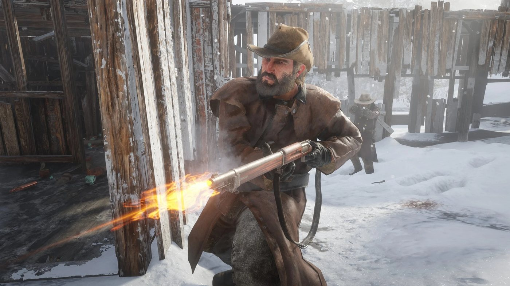
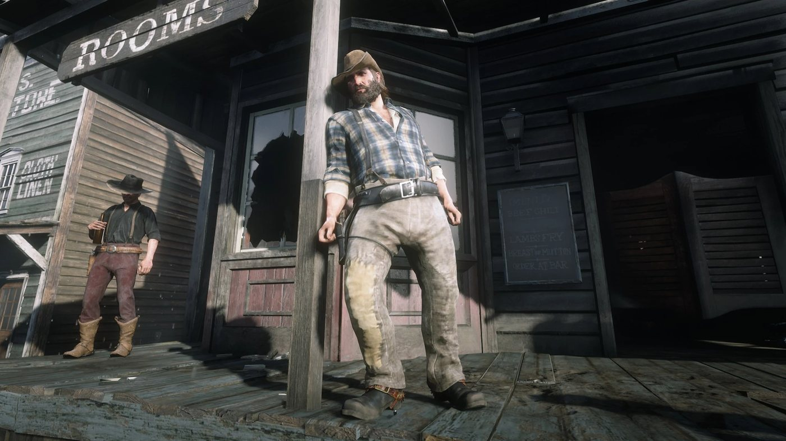
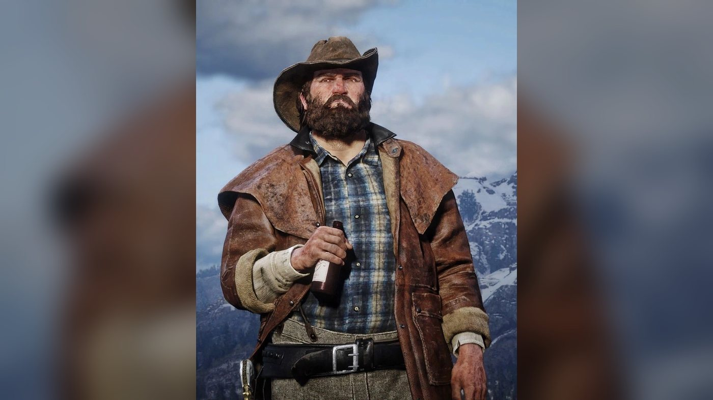
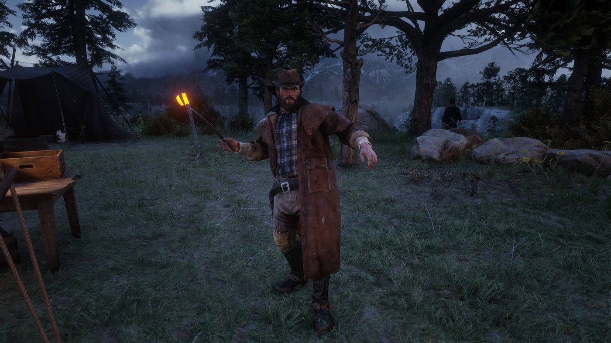
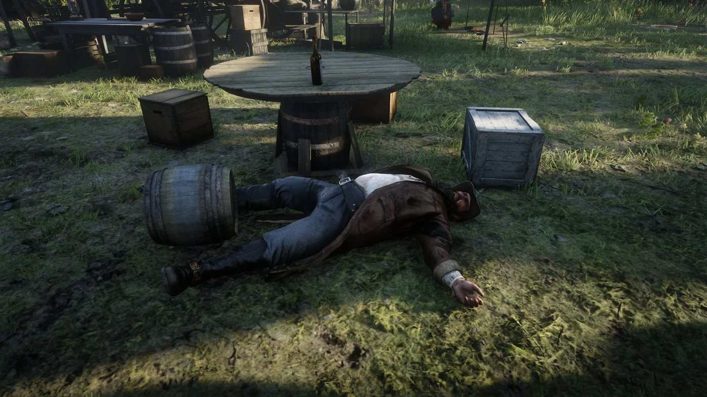
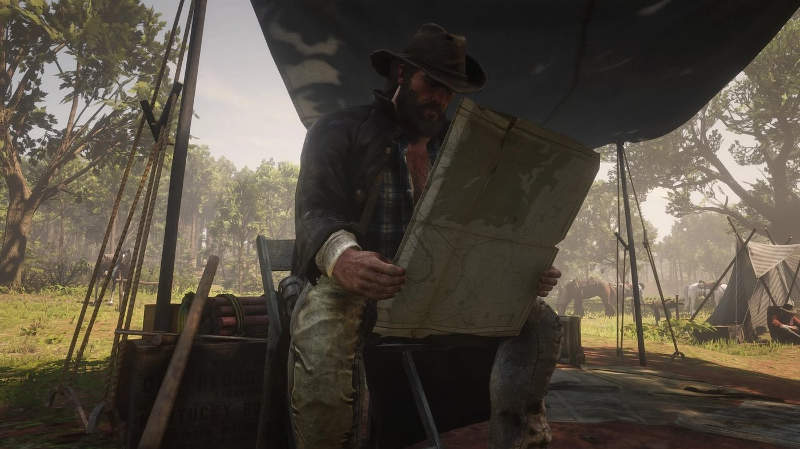
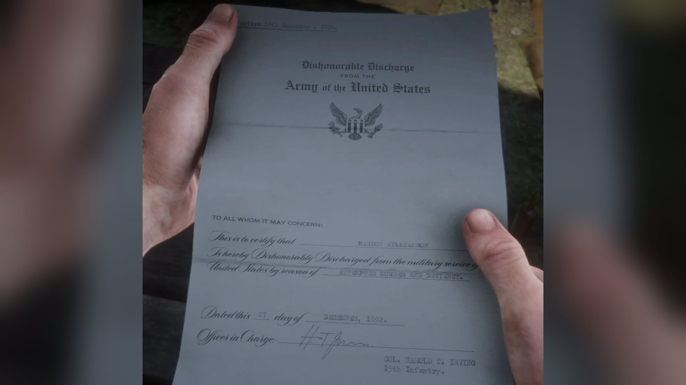
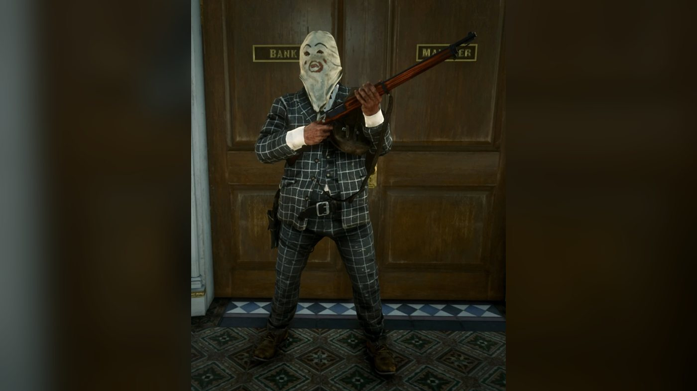
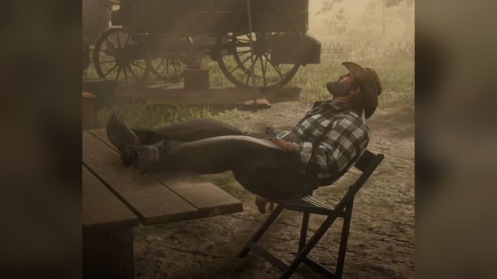
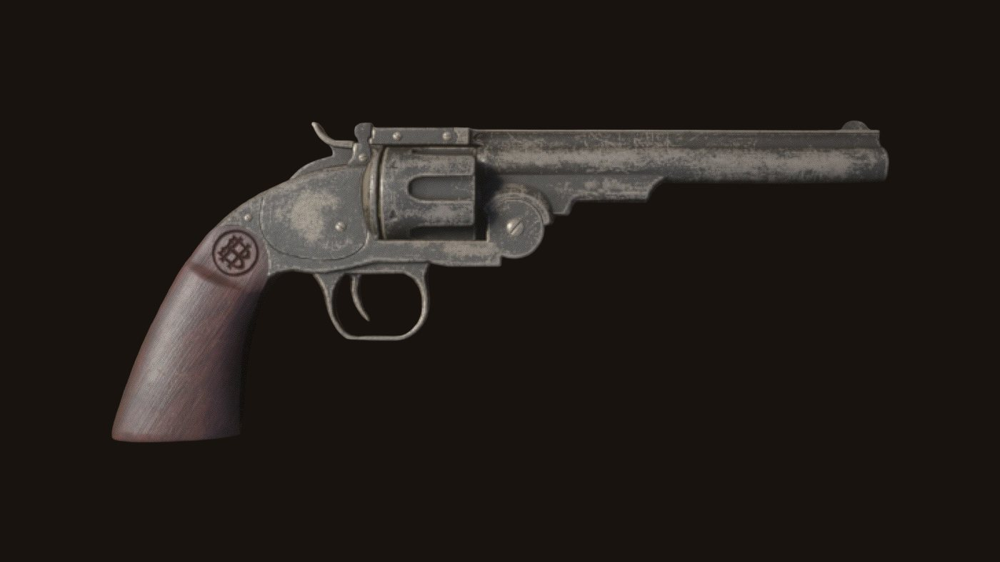
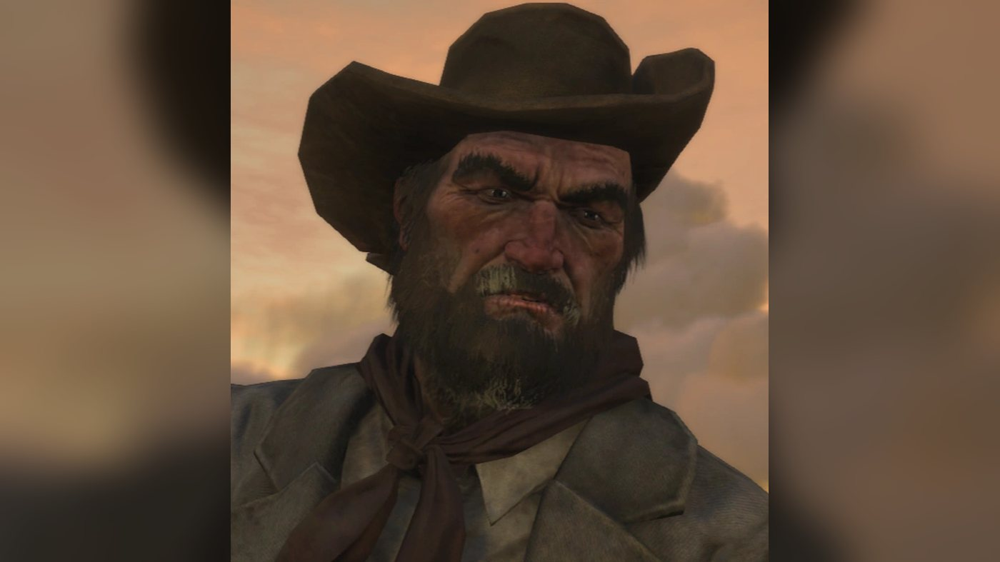
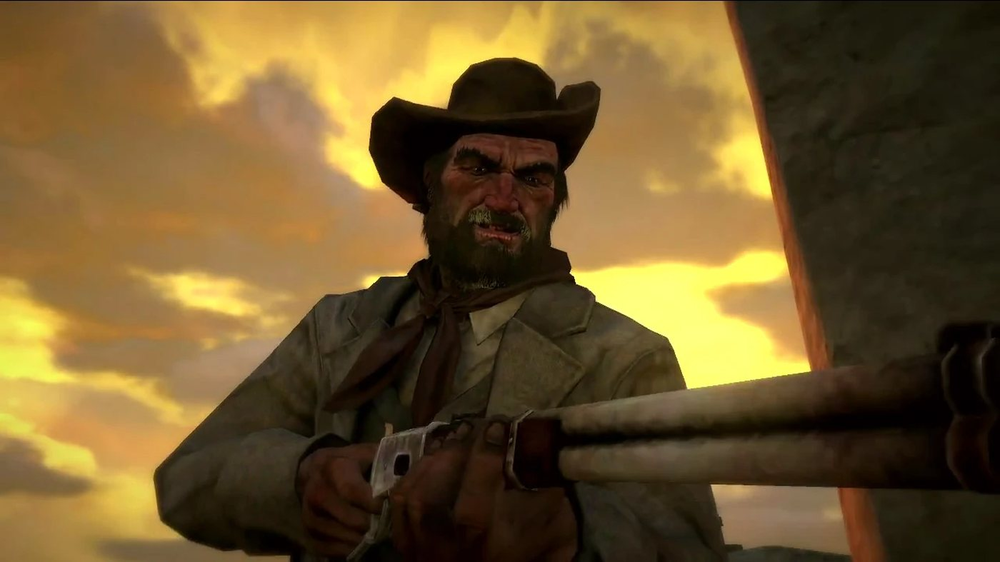
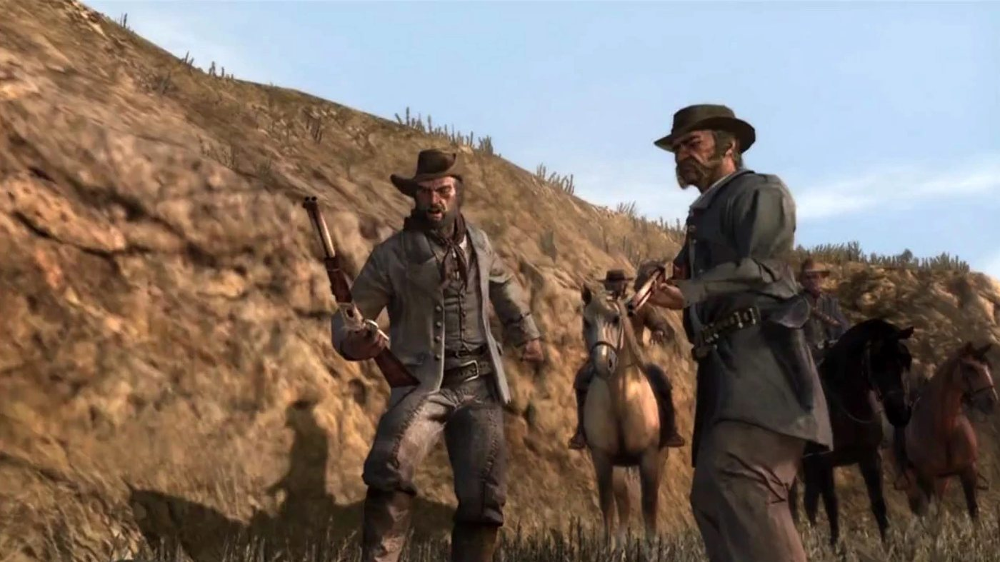